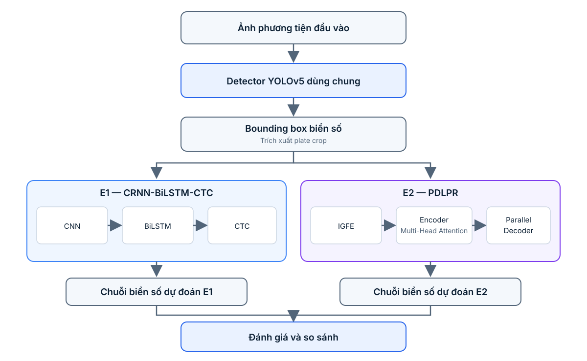

ALPR on CCPD
Automatic License Plate Detection and Recognition on CCPD, using YOLO26n with CRNN-BiLSTM-CTC and PDLPR.
1. Giới thiệu đề tài
1.1. Tên đề tài
Automatic License Plate Detection and Recognition (ALPR) from Still Images on the CCPD Dataset
1.2. Phát biểu bài toán
Automatic License Plate Recognition (ALPR) là bài toán tự động phát hiện vị trí biển số và nhận dạng chuỗi ký tự trên biển số từ ảnh phương tiện.
Đề tài xây dựng và đánh giá một pipeline ALPR, sử dụng ảnh tĩnh làm đầu vào. Hệ thống gồm hai nhiệm vụ:
- License Plate Detection: Phát hiện vị trí biển số trong ảnh và trích xuất vùng ảnh biển số.
- License Plate Recognition: Nhận dạng chuỗi ký tự từ vùng biển số đã được trích xuất.
Dữ liệu CCPD gồm ảnh chụp biển số trong nhiều điều kiện khác nhau như thay đổi ánh sáng, độ mờ, góc nghiêng, khoảng cách chụp và thời tiết. Đây là các điều kiện "unconstrained" mà paper PDLPR hướng tới.
1.3. Mục tiêu
- Xây dựng pipeline phát hiện và nhận dạng biển số từ ảnh tĩnh trên CCPD.
- Triển khai một pipeline chạy được từ ảnh đầu vào đến chuỗi ký tự đầu ra.
- So sánh ít nhất hai phương pháp nhận dạng trên cùng một detector: CRNN-CTC và PDLPR.
- Đánh giá riêng detection, recognition và hiệu quả end-to-end.
- Phân tích ảnh hưởng của điều kiện ảnh (theo các sub-dataset của CCPD) và của vị trí ký tự (ký tự Hán đầu tiên so với các ký tự còn lại) đến kết quả.
- Đối chiếu kết quả thực nghiệm với kết quả mà paper công bố trên cùng dataset, có nêu rõ khác biệt về thiết lập.
1.4. Phạm vi
Trong phạm vi:
- Ảnh tĩnh; không xử lý video hoặc tracking.
- Biển số trong CCPD (một biển số mỗi ảnh, một dòng, 7 ký tự).
- Detection và recognition.
Ngoài phạm vi:
- Nhận dạng hoặc phân loại loại phương tiện.
- Theo dõi phương tiện qua nhiều khung hình.
- Xây dựng hệ thống production hoặc tối ưu triển khai thời gian thực trên thiết bị biên.
- Đề xuất một kiến trúc ALPR hoàn toàn mới.
- Biển số nhiều dòng và biển số của các quốc gia/khu vực khác ngoài CCPD.
2. Paper được lựa chọn
2.1. Thông tin paper
Title: A Real-Time License Plate Detection and Recognition Model in Unconstrained Scenarios
Authors: Lingbing Tao, Shunhe Hong, Yongxing Lin, Yangbing Chen, Pingan He, and Zhixin Tie.
Journal: Sensors, 2024, Volume 24, Issue 9, Article 2791.
Publisher: MDPI.
DOI: https://doi.org/10.3390/s24092791
Official paper: https://www.mdpi.com/1424-8220/24/9/2791
PubMed record: https://pubmed.ncbi.nlm.nih.gov/38732896/
2.2. Lý do lựa chọn
- Paper giải quyết trực tiếp bài toán license plate detection and recognition.
- Paper mô tả hệ thống gốc gồm YOLOv5 cho detection và PDLPR cho recognition. Trong A2, giữ PDLPR làm phương pháp recognition nghiên cứu, nhưng thay detector bằng YOLO26n để sử dụng mô hình mới hơn.
- PDLPR có các thành phần kiến trúc cụ thể để phân tích: Improved Global Feature Extractor (IGFE), encoder sử dụng Multi-Head Attention và Parallel Decoder.
- Paper có thực nghiệm so sánh và ablation study để đánh giá các thành phần của phương pháp.
- Paper dùng CCPD làm benchmark chính, nên dataset của đề tài trùng với dataset của paper. Điều này cho phép đối chiếu giao thức đánh giá, các sub-dataset test và kết quả ablation của paper với thực nghiệm của đề tài.
- Paper được xuất bản trong Sensors (MDPI), có quy trình peer review; thông tin bài báo và DOI được ghi nhận trên PubMed. Việc kiểm tra trạng thái chỉ mục SCIE/Scopus cần được đối chiếu theo năm và danh mục chính thức tại thời điểm nộp báo cáo.
2.3. Tóm tắt phương pháp
Paper đề xuất YOLOv5-PDLPR, gồm hai giai đoạn:
- Detection – YOLOv5: phát hiện và định vị vùng biển số trong ảnh phương tiện.
- Recognition – PDLPR: nhận dạng chuỗi ký tự từ ảnh biển số đã crop, không yêu cầu tách từng ký tự bằng một detector riêng và không cần bước hiệu chỉnh (correction) biển số.
PDLPR gồm ba ý tưởng/thành phần chính:
- Improved Global Feature Extractor (IGFE): trích xuất đặc trưng hình ảnh biển số, dùng Focus Structure và convolution stride 2 thay cho pooling để hạn chế mất thông tin khi downsampling.
- Encoder with Multi-Head Attention: mã hóa đặc trưng và khai thác quan hệ giữa các vị trí đặc trưng.
- Parallel Decoder: dự đoán chuỗi ký tự theo cấu trúc giải mã song song, thay cho RNN tuần tự, nhằm cải thiện hiệu quả inference.
Paper báo cáo average accuracy 99.4% và tốc độ nhận dạng 159.8 FPS trên CCPD trong thiết lập thực nghiệm của tác giả. Đề tài dùng cùng dataset nhưng khác detector (YOLO26n thay YOLOv5), khác ngân sách huấn luyện và có thể dùng tập con của dữ liệu huấn luyện; vì vậy số liệu của paper chỉ dùng để đối chiếu, không phải kết quả dự kiến hoặc cam kết của đề tài.
2.4. Novelty và điểm cần đánh giá
Đóng góp của paper nằm ở cách thiết kế và kết hợp IGFE, Multi-Head Attention và Parallel Decoder cho recognition biển số. Các thành phần nền tảng như residual block và attention đã có trong nghiên cứu trước; vì vậy không nên mô tả chúng riêng lẻ là kỹ thuật hoàn toàn mới.
Điểm phù hợp để phân tích trong A2:
- Vai trò của từng module trong recognition.
- Sự khác biệt giữa giải mã tuần tự của CRNN/BiLSTM và Parallel Decoder.
- Kết quả ablation mà tác giả dùng để kiểm chứng IGFE, decoder, số attention head và số decoding unit.
- Mức độ tái hiện được kết quả của paper khi giảm ngân sách huấn luyện và thay detector.
2.5. Hạn chế và cách áp dụng vào đề tài
- Paper đánh giá trên các dataset biển số Trung Quốc và Đài Loan; mô hình không được kiểm chứng trên biển số của quốc gia khác hay biển số nhiều dòng. Đề tài giới hạn trong CCPD nên không đánh giá khả năng chuyển giao sang kiểu biển số khác.
- Chính paper nêu hạn chế: dữ liệu huấn luyện hạn chế nên mô hình nhận dạng kém với các ký tự Hán khác ngoài "皖" (ký tự này chiếm hơn 95% trong CCPD). Đề tài sẽ kiểm tra hiện tượng này bằng cách báo cáo riêng độ chính xác của ký tự đầu tiên.
- CCPD chỉ có một biển số mỗi ảnh, biển một dòng 7 ký tự, nên không kiểm chứng được tình huống nhiều biển số hoặc biển nhiều dòng.
- Không thể xem kết quả accuracy/FPS trong paper là kết quả của đề tài vì khác detector, khác ngân sách huấn luyện (paper huấn luyện recognition 1000 epoch) và khác môi trường đo.
- Chưa xác minh được official implementation và pretrained weights do chính tác giả paper phát hành. Do đó, kế hoạch cần dự phòng việc tự triển khai PDLPR theo mô tả trong paper và ghi rõ các chi tiết mà paper chưa mô tả đầy đủ.
Vai trò của paper trong A2: Paper được chọn làm cơ sở nghiên cứu cho PDLPR, đặc biệt là IGFE, Multi-Head Attention và Parallel Decoder. A2 không tái hiện nguyên bản toàn bộ YOLOv5-PDLPR: detector YOLOv5 trong paper được thay bằng YOLO26n, còn PDLPR được nghiên cứu/tái triển khai ở vai trò recognition. Vì vậy, tên gọi chính xác của phương pháp trong A2 là YOLO26n + PDLPR (paper-inspired adaptation), không phải reproduction nguyên bản YOLOv5-PDLPR.
3. Dataset
3.1. Dataset được lựa chọn
Tên: CCPD – Chinese City Parking Dataset
Official repository: https://github.com/detectRecog/CCPD
Paper của dataset: Xu, Z., Yang, W., Meng, A., Lu, N., Huang, H., Ying, C., & Huang, L. (2018). Towards End-to-End License Plate Detection and Recognition: A Large Dataset and Baseline. ECCV 2018.
License: MIT (theo paper ECCV 2018 và repository; sẽ được kiểm tra lại trên repository trước khi nộp báo cáo).
CCPD là bộ dữ liệu biển số lớn do công ty quản lý đỗ xe ven đường chụp thủ công và được annotate cẩn thận. Mỗi ảnh có đúng một biển số. Theo repository, bản CCPD2019 có hơn 300k ảnh, có bounding box, bốn đỉnh biển số và chuỗi ký tự. Ảnh được chia thành nhiều sub-dataset theo điều kiện chụp.
3.2. Thống kê theo paper và repository
| Thuộc tính | Thông tin |
|---|---|
| Tổng số ảnh | Hơn 300k (CCPD2019, theo repository); paper ECCV 2018 nêu hơn 250k; paper PDLPR ghi 283k |
| Số biển số mỗi ảnh | 1 |
| Số ký tự mỗi biển | 7 (1 ký tự Hán đại diện tỉnh, 1 chữ cái, 5 chữ cái hoặc chữ số) |
| Nhãn vị trí | Bounding box (góc trái-trên và phải-dưới) và bốn đỉnh biển số |
| Nhãn nhận dạng | Chuỗi ký tự, mã hóa dưới dạng chỉ số ký tự trong tên file |
| Thuộc tính khác | Tỉ lệ diện tích biển số, độ nghiêng ngang/dọc, độ sáng, độ mờ (trong tên file) |
| Sub-dataset | Base, DB, Blur, FN, Rotate, Tilt, Challenge, Weather, ... |
Các con số trên là thống kê do paper/repository công bố, có thể khác giữa các phiên bản. Số lượng mẫu thực tế sử dụng sẽ được xác nhận sau khi tải dữ liệu (dung lượng khoảng 12GB theo repository), kiểm tra file và loại bỏ mẫu lỗi/trùng lặp nếu có. Sub-dataset CCPD-Green (biển năng lượng mới, 8 ký tự) nằm ngoài phạm vi đề tài.
3.3. Lý do lựa chọn
- Dataset công khai, có license MIT, phù hợp yêu cầu "tập công khai, dùng được cho học tập".
- Quy mô lớn, đa dạng điều kiện chụp, đủ để đánh giá có ý nghĩa.
- Có bounding box để huấn luyện detector và chuỗi ký tự để huấn luyện recognizer, cả hai đều lấy được từ tên file.
- Có protocol đánh giá rõ ràng từ tác giả dataset: split train/val trên CCPD-Base và các sub-dataset dùng để test.
- Là dataset chính của paper PDLPR nên đối chiếu được trực tiếp với paper.
Khi sử dụng dữ liệu, báo cáo sẽ trích dẫn paper ECCV 2018 và repository CCPD.
3.4. Chia dữ liệu
Chia dữ liệu theo protocol của CCPD:
| Split | Nguồn | Mục đích |
|---|---|---|
| Training | CCPD-Base, phần train theo file split của repository | Huấn luyện |
| Validation | CCPD-Base, phần val theo file split của repository | Theo dõi huấn luyện và chọn checkpoint |
| Testing | Các sub-dataset DB, Blur, FN, Rotate, Tilt, Challenge (có thể thêm Weather như paper) | Đánh giá cuối cùng |
Protocol:
- Ưu tiên dùng file split chính thức trong repository; nếu thư mục split không khớp với bản dữ liệu tải về thì ghi rõ cách chia thay thế.
- Do giới hạn tài nguyên, có thể lấy mẫu con từ tập train/test với random seed cố định; số lượng mẫu mỗi split và tiêu chí lấy mẫu được báo cáo sau bước audit.
- Kiểm tra ảnh trùng lặp hoặc gần trùng lặp (cùng một xe được chụp nhiều lần) để hạn chế data leakage giữa train/val/test.
- Chia dữ liệu trước khi tạo crop cho recognition.
- Không dùng test set để chọn hyperparameters hoặc checkpoint.
Nếu lấy mẫu con hoặc thay đổi cách chia so với paper, cần nêu rõ vì kết quả sẽ không so sánh trực tiếp với paper được.
3.5. Tiền xử lý dự kiến
Detection:
- Đọc ảnh và bounding box từ tên file.
- Chuyển annotation sang định dạng YOLO.
- Resize/letterbox theo input size và preprocessing của YOLO26n; chuyển đổi bounding box đồng bộ với phép biến đổi ảnh.
- Áp dụng augmentation có kiểm soát như brightness/contrast, blur, noise và geometric transformation; phải biến đổi bounding box đồng bộ với ảnh. Không lật ngang ảnh vì sẽ làm sai thứ tự ký tự.
Recognition:
- Tạo plate crop từ ground-truth bounding box cho training/validation recognition.
- Resize và normalize theo yêu cầu từng recognizer (paper PDLPR dùng input 48 × 144).
- Giải mã chuỗi ký tự từ các chỉ số trong tên file bằng các bảng ký tự do repository CCPD cung cấp; lưu ý ký hiệu "O" trong các bảng này được dùng như ký tự rỗng (no character), cần xử lý trong bước audit nhãn.
- Xây dựng character vocabulary từ nhãn thực tế (ký tự Hán đại diện tỉnh, chữ cái và chữ số).
- Augmentation cho recognition tương tự paper: color jitter, random crop, random scale, random translation và random rotation.
- Trong đánh giá end-to-end, sử dụng crop từ detection prediction thay vì ground-truth crop.
4. Phương pháp và thiết kế so sánh
4.1. Thiết kế tổng thể
Detector được chốt: YOLO26n (yolo26n.pt). Theo tài liệu Ultralytics, YOLO26 là dòng model mới nhất đã phát hành; yolo26n.pt là checkpoint pretrained có thể dùng trực tiếp cho inference và fine-tuning trên dữ liệu tùy chỉnh. Checkpoint này pretrained cho bài toán detection trên COCO, vì vậy vẫn cần fine-tune trên CCPD để phát hiện biển số. Không được nhầm pretrained detector này với pretrained PDLPR.
Để so sánh recognition một cách công bằng, sử dụng cùng một YOLO26n detector cho cả hai pipeline. Chỉ thay đổi recognition model:
- E1 – Baseline: YOLO26n + CRNN-BiLSTM-CTC.
- E2 – Paper-inspired method: YOLO26n + PDLPR.
Như vậy, khác biệt chính giữa E1 và E2 nằm ở recognizer, không phải detector.
Lý do chọn YOLO26n thay cho YOLOv5 trong phần triển khai: YOLO26 là dòng Ultralytics mới hơn, có checkpoint pretrained công khai và hỗ trợ fine-tuning. Dùng biến thể n để giới hạn chi phí tính toán. Việc thay detector giúp đề tài dùng công cụ hiện hành, nhưng đồng nghĩa hệ thống không còn là bản tái hiện nguyên gốc YOLOv5-PDLPR; sự khác biệt này sẽ được nêu rõ trong báo cáo. Thư viện Ultralytics phát hành theo giấy phép AGPL-3.0; cần ghi rõ khi công khai code.
4.2. Pipeline E1 — CRNN-BiLSTM-CTC
CRNN là baseline nhận dạng chuỗi ảnh phổ biến:
- CNN: trích xuất đặc trưng từ ảnh biển số.
- BiLSTM: học quan hệ tuần tự hai chiều trên chuỗi đặc trưng.
- CTC: huấn luyện chuỗi mà không cần căn chỉnh nhãn từng ký tự với từng vị trí ảnh.
4.3. Pipeline E2 — PDLPR
Tái triển khai PDLPR theo mô tả trong paper:
- IGFE: trích xuất đặc trưng toàn cục (Focus Structure, ConvDownSampling, RESBLOCK).
- Encoder với Multi-Head Attention: mã hóa quan hệ giữa các vị trí đặc trưng.
- Parallel Decoder: dự đoán chuỗi ký tự bằng cấu trúc giải mã song song.
Paper huấn luyện recognition bằng hàm loss CTC với optimizer Adam; đề tài sẽ dùng cùng loại loss cho cả E1 và E2 để so sánh công bằng. Các chi tiết triển khai mà paper chưa mô tả đầy đủ hoặc chưa được code chính thức xác nhận sẽ được ghi rõ là quyết định triển khai của đề tài, không gán thành cấu hình nguyên bản của tác giả. Các thông số huấn luyện như số epoch sẽ khác paper do giới hạn tài nguyên và được báo cáo cụ thể.
4.4. Sơ đồ pipeline

4.5. Quy tắc đảm bảo so sánh công bằng
- Cùng dataset và train/validation/test split.
- Cùng YOLO26n detector và cùng detector checkpoint cho cả E1, E2.
- Khi đánh giá recognition riêng, dùng cùng ground-truth plate crops.
- Khi đánh giá end-to-end, dùng cùng detection predictions/crops.
- Dùng cùng character vocabulary, quy tắc chuẩn hóa chuỗi và tiêu chí exact match.
- Dùng cùng input size, augmentation và ngân sách huấn luyện (số epoch, mức tinh chỉnh hyperparameter) cho hai recognizer.
- Công bố cấu hình training, input size, epoch, optimizer, learning rate, batch size và checkpoint được chọn cho từng recognizer.
- Báo cáo rõ mô hình nào dùng pretrained weights và nguồn checkpoint. Không xem pretrained YOLO26n là pretrained PDLPR.
- Nếu thời gian cho phép, chạy từ 2–3 random seed để đánh giá độ ổn định của kết luận.
5. Evaluation Metrics
5.1. Detection
| Metric | Ý nghĩa |
|---|---|
| Precision | Tỷ lệ detection dự đoán đúng trên tổng detection được dự đoán |
| Recall | Tỷ lệ biển số ground truth được phát hiện |
| mAP@0.5 | Mean Average Precision tại IoU 0.5 |
| mAP@0.5:0.95 | mAP trung bình trên nhiều ngưỡng IoU |
Vì mỗi ảnh CCPD chỉ có một biển số, khi đánh giá theo protocol CCPD sẽ lấy detection có confidence cao nhất của mỗi ảnh và coi là đúng nếu IoU với ground truth lớn hơn 0.7. Detector được huấn luyện/đánh giá độc lập một lần; cùng kết quả detector được dùng cho cả hai recognizer trong so sánh chính.
5.2. Recognition
| Metric | Ý nghĩa |
|---|---|
| Character Accuracy | Tỷ lệ ký tự dự đoán đúng theo quy tắc căn chỉnh được định nghĩa |
| Exact Plate Accuracy | Tỷ lệ chuỗi biển số khớp hoàn toàn với ground truth |
| CER | Character Error Rate ở cấp độ ký tự |
[ CER = \frac{S + D + I}{N} ]
Trong đó S là số ký tự thay thế, D là số ký tự bị xóa, I là số ký tự chèn thêm và N là tổng số ký tự ground truth.
5.3. End-to-End
End-to-End Exact Plate Recognition Rate: tỷ lệ ảnh đầu vào mà hệ thống phát hiện đúng biển số theo ngưỡng IoU được xác định trước và nhận dạng chính xác toàn bộ chuỗi ký tự.
Ngưỡng IoU chính là 0.7 theo benchmark CCPD; có thể báo cáo thêm ngưỡng 0.6 (dùng trong paper PDLPR cho tiêu chí nhận dạng đúng) để thuận tiện đối chiếu. Ảnh không phát hiện được biển số được tính là thất bại ở metric end-to-end.
5.4. Computational metrics
Nếu tài nguyên cho phép, báo cáo thêm:
- FPS hoặc latency (ms/image), ghi rõ đo trên CPU/GPU, batch size và có warm-up.
- Number of Parameters.
- Model Size.
Không so sánh FPS với paper nếu khác biệt môi trường đo hoặc cách tính; chỉ so sánh FPS giữa E1 và E2 đo trên cùng phần cứng.
6. Kế hoạch thực nghiệm và ablation
6.1. Thí nghiệm chính
| Experiment | Detection | Recognition | Mục đích |
|---|---|---|---|
| E1 | YOLO26n cố định | CRNN-BiLSTM-CTC | Baseline recognition |
| E2 | YOLO26n cố định | PDLPR | Đánh giá PDLPR-inspired recognition trên CCPD và đối chiếu với paper |
Báo cáo kết quả theo ba mức: detection, recognition trên ground-truth crops và end-to-end trên detection crops.
6.2. Ablation dự kiến
Nếu thời gian và tài nguyên cho phép, thực hiện ít nhất một ablation trên PDLPR:
- A1: PDLPR đầy đủ so với biến thể bỏ Multi-Head Attention; hoặc
- A2: PDLPR đầy đủ so với biến thể thay Parallel Decoder bằng decoder tuần tự phù hợp; hoặc
- A3: thay đổi số attention head hoặc số decoding unit để đối chiếu với kết luận của paper (8 head và 3 decoding unit cho kết quả tốt nhất).
Chỉ đưa ra kết luận về đóng góp của module khi các cấu hình còn lại được giữ cố định. Nếu không đủ thời gian triển khai ablation, báo cáo sẽ tập trung vào so sánh E1/E2 và phân tích kiến trúc/ablation đã công bố trong paper, đồng thời nêu rõ giới hạn này.
6.3. Phân tích theo nhóm dữ liệu
Ngoài kết quả tổng thể, phân tích Exact Plate Accuracy và CER theo:
- Từng sub-dataset của CCPD (DB, Blur, FN, Rotate, Tilt, Challenge và Weather nếu dùng), tương ứng các điều kiện ánh sáng, độ mờ, khoảng cách, góc xoay/nghiêng và thời tiết.
- Vị trí ký tự: ký tự Hán đầu tiên so với các ký tự chữ/số còn lại, để kiểm tra hạn chế mất cân bằng ký tự Hán mà paper đã nêu.
- Failure cases có hình minh họa, kèm nhận xét nguyên nhân có thể (detection lệch hay recognition sai).
Điều này giúp xác định mô hình nào bền vững hơn với các điều kiện khó và so sánh với xu hướng mà paper báo cáo trên các sub-dataset tương ứng.
6.4. Mở rộng tùy chọn (không bắt buộc)
- Attention heat map của PDLPR để minh họa vị trí mô hình chú ý khi nhận dạng từng ký tự (paper có hình tương tự), có thể thay cho Grad-CAM.
7. Tính khả thi và rủi ro
7.1. Tính khả thi
- YOLO26n có implementation và checkpoint pretrained chính thức
yolo26n.pttừ Ultralytics; tài liệu hỗ trợ fine-tuning trên dataset tùy chỉnh. - CCPD có quy mô lớn, annotation đầy đủ (bounding box và chuỗi ký tự) trong tên file, license MIT và protocol train/val/test rõ ràng.
- CRNN-CTC là baseline tương đối phù hợp để tự triển khai.
- PDLPR có mô tả kiến trúc, thông số huấn luyện và ablation trong paper, nhưng cần tự triển khai nếu không tìm được implementation chính thức.
- Có thể chia quá trình huấn luyện thành detector và recognizer, giúp kiểm soát tài nguyên GPU.
7.2. Rủi ro và phương án dự phòng
| Rủi ro | Phương án xử lý |
|---|---|
| Không có official PDLPR code/weights đã xác minh | Tự triển khai theo paper; giới hạn phạm vi module nếu cần và ghi rõ sai khác |
| PDLPR khó tái hiện trong thời gian A2 | Ưu tiên hoàn thiện E1; triển khai PDLPR tối thiểu để có so sánh hai phương pháp |
| Dataset dung lượng lớn, huấn luyện đầy đủ như paper (1000 epoch) không khả thi | Dùng tập con CCPD-Base với seed cố định, giảm epoch, ghi rõ khác biệt so với paper |
| Phân bố ký tự Hán lệch (ký tự "皖" chiếm đa số) làm accuracy ký tự đầu tiên thiếu tin cậy | Báo cáo riêng độ chính xác ký tự đầu tiên và các ký tự còn lại; nêu rõ như một hạn chế |
| Lỗi parse nhãn từ tên file (ký tự "O" dùng làm ký tự rỗng, mã hóa tên file) | Audit nhãn bằng cách giải mã lại và kiểm tra thủ công một mẫu ngẫu nhiên; ghi lại số mẫu bị loại |
| Dataset có ảnh lỗi/trùng lặp | Kiểm tra dữ liệu trước khi split và ghi lại số mẫu bị loại |
| Thiếu tài nguyên GPU | Dùng YOLO26n, giảm batch/input size và huấn luyện recognition riêng |
| Kết quả recognition tốt trên crop nhưng giảm mạnh end-to-end | Báo cáo riêng recognition và end-to-end để phân tích ảnh hưởng của detection |
| Kết quả thấp hơn paper do khác thiết lập | Nêu rõ các khác biệt (detector, ngân sách huấn luyện, tập con dữ liệu) và không kết luận paper sai |
8. Kế hoạch thực hiện
| Giai đoạn | Công việc |
|---|---|
| Phase 1 | Tải và audit CCPD: kiểm tra license, file, annotation trong tên file, character vocabulary và ảnh trùng lặp |
| Phase 2 | Cố định train/validation/test split; chuẩn bị YOLO labels và plate crops |
| Phase 3 | Fine-tune và đánh giá YOLO26n detector |
| Phase 4 | Huấn luyện CRNN-BiLSTM-CTC baseline |
| Phase 5 | Triển khai và huấn luyện PDLPR trên CCPD |
| Phase 6 | Chạy recognition evaluation, end-to-end evaluation và ablation khả thi |
| Phase 7 | Tổng hợp bảng kết quả, đối chiếu với paper, phân tích lỗi và viết báo cáo |
A2.1 xác định chủ đề, paper, dataset và protocol. A2.2 trình bày triển khai, thực nghiệm, so sánh và phân tích kết quả thực tế.
9. Kết luận và đề xuất chốt đề tài
Đề tài đề xuất xây dựng hệ thống Automatic License Plate Detection and Recognition from Still Images trên dataset CCPD.
Paper nghiên cứu chính là Tao et al. (2024), A Real-Time License Plate Detection and Recognition Model in Unconstrained Scenarios, đề xuất YOLOv5-PDLPR và dùng CCPD làm benchmark chính. Đề tài sử dụng YOLO26n làm detector chung và so sánh hai recognition model: CRNN-BiLSTM-CTC (baseline) và PDLPR (paper-inspired method). Đây là một điều chỉnh có chủ đích so với paper gốc: thay YOLOv5 bằng YOLO26n, giữ PDLPR ở tầng recognition. Hai pipeline được đánh giá trên cùng dữ liệu, cùng detector checkpoint và cùng protocol.
Phạm vi được giới hạn ở ảnh tĩnh, detection và recognition biển số trong CCPD. Kết quả sẽ được đánh giá bằng detection metrics, recognition metrics và end-to-end metrics, đồng thời đối chiếu với kết quả của paper trên cùng dataset với các khác biệt thiết lập được nêu rõ. Mục tiêu không phải tuyên bố tạo ra kiến trúc mới, mà là tái triển khai có kiểm soát một phương pháp trong paper và đánh giá mức độ tái hiện được cùng các hạn chế của nó.
Đề xuất xin ý kiến giáo sư: chốt đề tài ALPR trên CCPD; sử dụng paper YOLOv5-PDLPR (Tao et al., 2024) làm cơ sở nghiên cứu cho PDLPR; triển khai hai pipeline YOLO26n + CRNN-BiLSTM-CTC và YOLO26n + PDLPR. YOLO26n dùng pretrained weights chính thức của Ultralytics rồi fine-tune trên CCPD. So sánh chính tập trung vào hai recognition model trong điều kiện detector được giữ cố định.
10. References
- Tao, L., Hong, S., Lin, Y., Chen, Y., He, P., & Tie, Z. (2024). A Real-Time License Plate Detection and Recognition Model in Unconstrained Scenarios. Sensors, 24(9), 2791. https://doi.org/10.3390/s24092791
- Xu, Z., Yang, W., Meng, A., Lu, N., Huang, H., Ying, C., & Huang, L. (2018). Towards End-to-End License Plate Detection and Recognition: A Large Dataset and Baseline. Proceedings of the European Conference on Computer Vision (ECCV), 255–271. https://openaccess.thecvf.com/content_ECCV_2018/papers/Zhenbo_Xu_Towards_End-to-End_License_ECCV_2018_paper.pdf
- CCPD Dataset. Chinese City Parking Dataset. Official GitHub repository (MIT License). https://github.com/detectRecog/CCPD
- Shi, B., Bai, X., & Yao, C. (2017). An End-to-End Trainable Neural Network for Image-Based Sequence Recognition and Its Application to Scene Text Recognition. IEEE Transactions on Pattern Analysis and Machine Intelligence. https://doi.org/10.1109/TPAMI.2016.2646371
- Ultralytics. YOLO26 Documentation. https://docs.ultralytics.com/models/yolo26/
- Ultralytics. YOLO26 model source code. https://github.com/ultralytics/ultralytics
Ghi chú xác minh trước khi nộp
- Xác nhận license MIT, số lượng file thực tế, danh sách sub-dataset và file split trong bản CCPD tải về (các con số trong mục 3.2 khác nhau giữa paper ECCV 2018, repository và paper PDLPR).
- Kiểm tra lại trạng thái SCIE/Scopus của Sensors bằng nguồn danh mục chính thức tương ứng với năm xuất bản nếu cần ghi cụ thể trong phần venue analysis.
- YOLO26n có pretrained checkpoint
yolo26n.ptdo Ultralytics cung cấp; đây là checkpoint pretrained cho detection trên COCO, không phải mô hình đã huấn luyện nhận dạng biển số. - Chưa xác minh được official code và pretrained weights do tác giả YOLOv5-PDLPR phát hành. Không dẫn repository bên thứ ba như official implementation.
- Các thông số huấn luyện, split, kết quả trên CCPD và ablation của đề tài chỉ được ghi nhận sau khi thực nghiệm; không sử dụng số liệu của paper làm kết quả của mình.